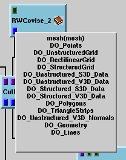

|  | Show the data type(s) allowed for a
port by clicking on the port with the right mouse button:
You get the the allowed data type (or list of allowed data types) in a message window attached to the icon (Message area not used for this purpose any longer). The entry has the following structure:
data type or
list of data types (see example at the left) |
You can get detailed info about actual data types used in your map after execution if you
Look now at ConnectingModules.